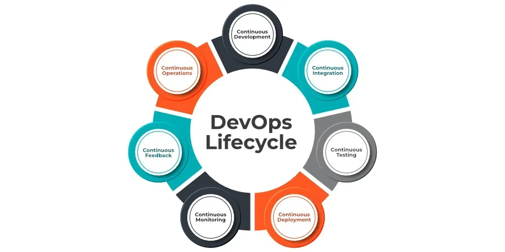

DevOps
DevOps on transformatiivne kultuur ja praktika, mis ühendab tarkvaraarenduse (Dev) ja
IT operatsioonide (Ops) meeskondi. Soodustades koostööd ja võimendades
automatiseerimistehnoloogiaid, võimaldab DevOps kiiremat ja usaldusväärsemat
koodi juurutamist tootmisse tõhusal ja korrataval viisil.
Seitse DevOpsi C-d:
-
Pidev areng (Continuous development):
Pideva arenduse puhul kirjutatakse kood pigem väikeste pidevate bittidena, mitte korraga,
pidev arendus on DevOpsis oluline, kuna see parandab tõhusust iga kord, kui koodijupp luuakse,
seda testitakse, ehitatakse ja tootmisse juurutatakse. Pidev arendus tõstab koodi taset ja
ühtlustab vigade, haavatavuste ja defektide parandamise protsessi.
See hõlbustab arendajatel keskenduda kvaliteetse koodi loomisele.
-
Pidev integreerimine (Continuous integration):
Pidevat integreerimist saab DevOpsis selgitada peamiselt neljas etapis. Need on järgmised:
-
Lähtekoodi hankimine SCM-ist (Source Control Management)
-
Koodi buildimine
-
Koodi kvaliteedi ülevaatus
-
Build-i artefaktide salvestamine
Eespool mainitud etapid on pideva integreerimise voog ja igas etapis saab kasutada
kõiki nõudmistele vastavaid tööriistu ning kõige populaarsemad tööriistad on
GitHub lähtekoodi haldamiseks (SCM), kui arendaja arendab koodi oma kohalikus masinas,
lükkab ta selle kaughoidlasse, milleks on siin GitHub, ning kellel on juurdepääs,
saab koodi tõmmata, kloonida ja teha vajalikke muudatusi.
Sealt saab Maveni abil need vajalikusse paketti (sõda, purk, kõrv) ehitada ja Juniti juhtumeid testida.
SonarQube teostab koodikvaliteedi ülevaatusi, kus mõõdab lähtekoodi kvaliteeti ja genereerib
aruande HTML- või PDF-vormingus. Järguartefaktide salvestamiseks mõeldud Nexus aitab
salvestada Maveni abil koostatud artefakte ja kogu see protsess
saavutatakse pideva integreerimise tööriista Jenkinsi abil.
-
Pidev testimine (Continuous testing):
Iga ettevõte saab kasutada pidevat testimist, kasutades agiilse ja DevOpsi metoodikat.
Olenevalt vajadustest saab teostada pidevat testimist, kasutades automatiseerimise testimise
tööriistu nagu Testsigma, Selenium, LambdaTest jne. Nende tööriistade abil saab testida
oma koodi ja ennetada probleeme ja koodihaisusid, samuti testida kiiremini ja nutikamalt.
Pideva integratsiooniplatvormi, nagu Jenkins, abil saab kogu
protsessi automatiseerida, mis on veel üks lisaeelis.
-
Pidev juurutamine / pidev tarnimine (Continuous deployment / continuous delivery):
Pidev juurutamine on rakenduse automaatne juurutamine tootmiskeskkonda, kui see on
testimise ja ehitamise etapid lõpetanud.
Siin saab automatiseerida kõike alates rakenduse lähtekoodi hankimisest kuni selle juurutamiseni.
Pidev tarnimine on rakenduse tootmisserveritesse käsitsi juurutamise protsess,
kui see on testimise ja ehitamise etapid lõpetanud. Siin saab automatiseerida
pidevad integreerimisprotsessid, kuid selle tootmiskeskkonda juurutamiseks on siiski vaja käsitsi kaasamist.
-
Pidev monitooring (Continuous monitoring):
DevOpsi elutsükkel on puudulik, kui pidevat monitoorimist ei olnud.
Prometheuse ja Grafana abiga on võimalik saavutada pidevat monitoorimist ja saab
sellest teavitada enne, kui midagi läheb valesti. Prometheuse abil saab koguda palju
jõudlusnäitajaid, sealhulgas protsessori ja mälu kasutust, võrguliiklust, rakenduste reageerimisaegu,
veamäärasid ja muud. Grafana võimaldab visuaalselt esitada
ja jälgida aegridade andmeid, nagu protsessori ja mälu kasutamine.
-
Pidev tagasiside (Continuous feedback):
Pärast rakenduse turule laskmist hakkavad lõppkasutajad rakendust kasutama ning annavad
tagasisidet rakenduse toimivuse ja kasutajakogemust mõjutavate tõrgete kohta pärast
lõppkasutajatelt mitmekordse tagasiside saamist. DevOpsi meeskond analüüsib lõppkasutajate
antud tagasisidet ja pöördub arendajameeskonna poole, kes püüab parandada vigu,
mida nad selles kooditükis arendavad.
Samuti vähendatakse rakenduse juurutamiseks vajalikke tarbetuid samme.
Pidev tagasiside võib suurendada rakenduse jõudlust ja vähendada koodi vigu,
muutes lõppkasutajate jaoks rakenduse kasutamise sujuvaks.
-
Pidevad toimingud (Continuous operations):
Säilitatakse rakenduste pikemat tööaega, rakendades pidevat tööd, mis aitab
vähendada hooldusseisakuid, mis mõjutavad negatiivselt lõppkasutajate kogemusi.
Suurem toodang, madalamad tootmiskulud ja parem kvaliteedikontroll on pideva töö eelised.
DevOpsi elutsükli erinevad faasid:
-
Plaan:
Spetsialistid määravad kindlaks ärilised vajadused ja koguvad lõppkasutajate arvamusi
kogu sellel tasemel. Selles etapis koostavad nad
projektiplaani, et optimeerida ärimõju ja saavutada soovitud tulemus.
-
Kood:
Selle aja jooksul töötatakse koodi välja. Disainiprotsessi lihtsustamiseks kasutab
arendajameeskond elutsükli DevOpsi tööriistu ja laiendusi, nagu Git,
mis aitavad ennetada ohutusprobleeme ja halbu kodeerimisstandardeid.
-
Build:
Kui programmeerijad on oma ülesanded täitnud, kasutavad nad koodi ühisesse
koodiallikasse esitamiseks tööriistu, nagu Maven ja Gradle.
-
Test:
Tarkvara terviklikkuse tagamiseks tarnitakse toode esmalt testplatvormile, et
viia läbi mitmesuguseid sõeluuringuid, nagu kasutajate vastuvõetavuse testimine,
ohutuse testimine, integratsiooni kontroll, kiiruse testimine jne,
kasutades selliseid tööriistu nagu JUnit, Selenium jne.
-
Väljalask:
Sel hetkel on build ette valmistatud töökeskkonnas juurutamiseks.
DevOpsi osakond valmistab ette värskendusi või saadab mitu versiooni tootmisse,
kui build rahuldab kontrolle organisatsiooni põhinevatel nõuetel.
-
Juurutamine:
Siinkohal aitab Infrastructure-as-Code luua operatiivset infrastruktuuri
ja avaldab seejärel buildi erinevate DevOpsi elutsükli tööriistade abil.
-
Käitamine:
Seda versiooni on kasutajatel nüüd mugav kasutada.
Tööriistadega, sealhulgas Chef, hoolitseb haldusosakond serveri konfigureerimise ja juurutamise eest.
-
Jälgimine:
DevOpsi töövoogu jälgitakse sellel tasemel sõltuvalt tarbijakäitumisest,
rakenduste tõhususest ja muudest allikatest kogutud andmetest.
Võimalus jälgida kogu ümbrust aitab meeskondadel tuvastada kitsaskohti,
mis mõjutavad tootmis- ja tegevusmeeskondade tööd.

DevOps arendustsükli head ja halvad
| Head |
Halvad |
| Kiirem kohaletoimetamine |
Suur alginvesteering |
| Täiustatud koostöö |
Oskuste nappus |
| Täiustatud kvaliteet |
Vastupidavus muutustele |
| Suurenenud automatiseerimine |
Standardiseerimise puudumine |
| Parem skaleeritavus |
Suurem keerukus |
| Suurenenud klientide rahulolu |
Sõltuvus tehnoloogiast |
| Täiustatud turvalisus |
Vajadus pideva täiustamise järele |
| Parem ressursside kasutamine |
|
allikad:
GeeksforGeeks
GeeksforGeeks